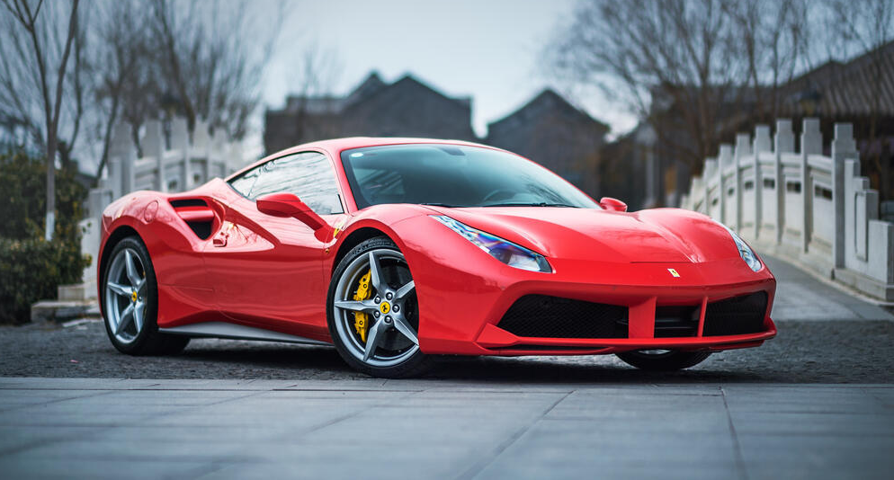

Crescimento dos carros elétricos em 2025
Mercado sobe 10,62% com destaque para BYD Song Pro e 15 mil eletropostos no país.
Brasil volta ao Top 8 na produção
2,5 milhões de unidades produzidas em 2024 e meta de 3 milhões para 2025.

Vendas batem recorde em 2024
Volkswagen T-Cross e BYD Dolphin Mini puxam crescimento no mercado.
Toyota Yaris Cross no Brasil
Modelo híbrido-flex será produzido em Sorocaba a partir de 2025.

Produção nacional de elétricos
Modelos BYD e GWM ganham fábricas no Brasil com foco no mercado local.

Nova picape Toyota
Concorrente da Fiat Toro e Ram Rampage chega com força em 2025.
Mustang GTD 2025
Com 815cv, é o Mustang de rua mais rápido já feito, atingindo 325 km/h.